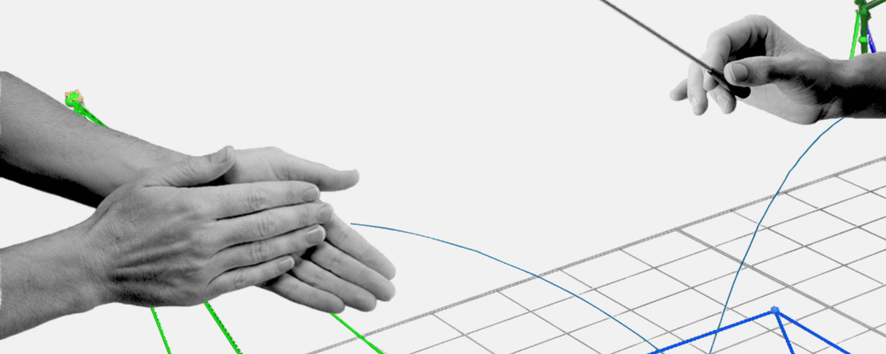
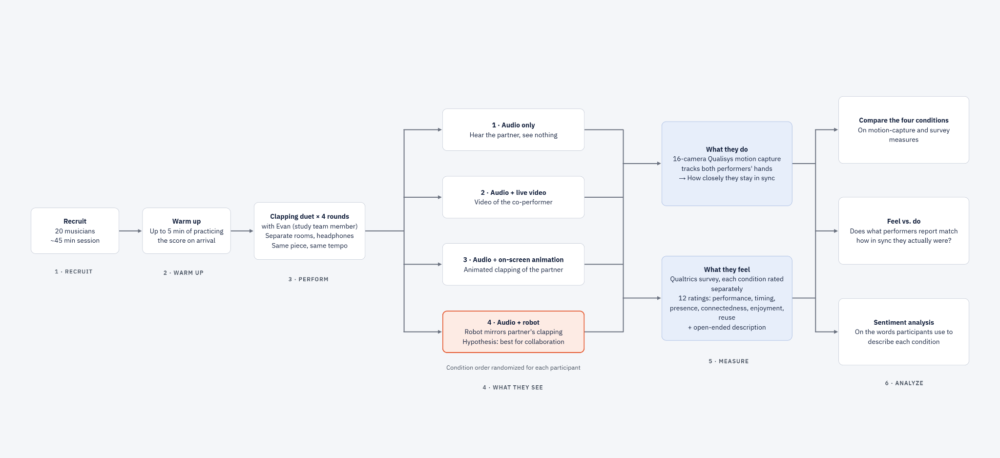

Exploring Robot-Mediated Remote Music Collaboration
An experimental study testing whether a robot that mirrors body movements helps musicians perform remote duets.
This study is in progress
Our pilot is planned for late October 2026, so there are no findings yet. This case study covers the question, how we built the robot and designed the study, and what I have learned working on the team so far. Everything about the study design is the current plan and may change.
context
More and more musicians perform together remotely, but remote duets have a problem. Sound travels with almost no delay but video doesn’t. Video lags, and there’s no good fix yet.
That matters because musicians don’t rely only on sound. Visual communication is how they share rhythm and timing, emotion, and a sense of connection, all of which make a performance good.
So if video can’t keep up, can a different kind of visual display give remote musicians what they need?
goal
Test whether a robot that mirrors a remote partner's movements helps musicians perform a duet together, compared with audio alone, live video, and an on-screen animation.
We are looking at specific key measures, including synchronization, presence, social connectedness, and overall performance.
hypothesis
Based on the research literature, we expect the robot to be the best display for supporting remote music collaboration. This is a hypothesis we have not tested yet.
key research questions
- Does a robot display help remote musicians play in time with each other?
- Does it make them feel more present with, and connected to, their partner?
- Does it improve how the performance feels and how well it goes?
- How does it compare with three conditions: audio only, live video and with an on-screen animation?
how research shaped the build
I joined the team to bring a research perspective. At first my work was project management and literature review. That review turned out to shape much of what came next: the study design, the survey, and the prototype of the robot's arms.
I built the arms with a performance arts technology student, then iterated with engineering and robotics students until the design worked and met our research goals.
One design decision where research mattered: the team wondered whether realistic, human-looking hands would work better for participants. The literature review I conducted showed an anthropomorphic design would not support our study goals.
being the only researcher in the room
I was the only researcher on a team of engineers, roboticists, and musicians, in fields I knew little about. Two things made that workable.
Asking questions. I took on note-taking and keeping the team on track, which gave me a reason to ask questions in every meeting. I also recorded our meetings and used Claude to give me short summaries of the technical information I didn’t understand, then brought my follow-up questions to the next meeting. By the time I was asked to help build the robot’s arms, I understood how the robot worked well enough to say yes, even though my prototyping experience stopped at Figma. I built the arms with a performance arts technology student, then iterated on the design with engineering and robotics students to meet the technical requirements.
Translating research for the team: When we designed the survey, I felt comfortable establishing the measures and operationalizing them into questions based on the research literature I had reviewed. When teammates asked why we were wording a question a certain way, I explained what the research said, why it said it, and what it meant for the decision, in plain terms that worked for engineers, roboticists, and musicians alike. This is something I had to learn how to do. In the end, their questions made the survey clearer, and I took the same approach into the other research decisions, including the study design. That approach made me a better cross-functional collaborator.
research methods: within-subjects experiment (planned)
For our study, we are aiming to recruit 20 musicians. Participants get up to five minutes to practice a clapping score when they first arrive, and the whole session takes about 45 minutes.
Participants will perform the same clapping duet four times with a study team member, Evan, who plays the second part at the same time. They will be in separate rooms.
The separate rooms are simulated with a partition, and they will hear each other through headphones. Each time, they perform they will see something different:
- Audio only
- Audio and live video of the co-performer
- Audio and an on-screen animation of the co-performer's clapping
- Audio and the robot mirroring the co-performer's clapping
Everyone plays the same piece at the same tempo. The order of conditions is randomized for each participant.

what we will measure
- We will measure what participants do. Participants wear motion capture gloves with reflective markers, and a 16-camera Qualisys motion capture system tracks both performers' hands. This shows how closely the two stay in sync.
- We also want to understand their experience, so after the session, they will complete a survey that asks about each condition separately. Twelve rating questions cover performance quality, timing, presence, connectedness, enjoyment, and whether they would use the setup again. An open response asks them to describe each condition.
I designed the survey from an extensive literature review on what makes a good duet. That review is how we decided what to measure.
analysis plan
Compare the four conditions on the motion capture and survey measures.
- Compare survey with motion capture. The survey captures how performers perceived the performance, and motion capture gives an objective measure of sync. We want to see whether what people feel matches what they do.
- Run sentiment analysis on the words participants use to describe each condition.
what's next
- Run the pilot in late October 2026 and adjust the protocol and survey based on what we learn.
- Run the full study in November and analyze the motion capture and survey data.
- Update this case study with findings once we have results.
contribution
- Brought a research perspective to the team and led all research work: survey design, experimental design, and research operations and planning.
- Conducted literature reviews that informed the study design, the survey, and the arm prototype.
- Built the robot's arms with a performance arts technology student and iterated on the design with engineering and robotics students.
- Designed the experimental study and the post-session survey.
- Preparing and running the pilot, scheduled for late October 2026.
more work